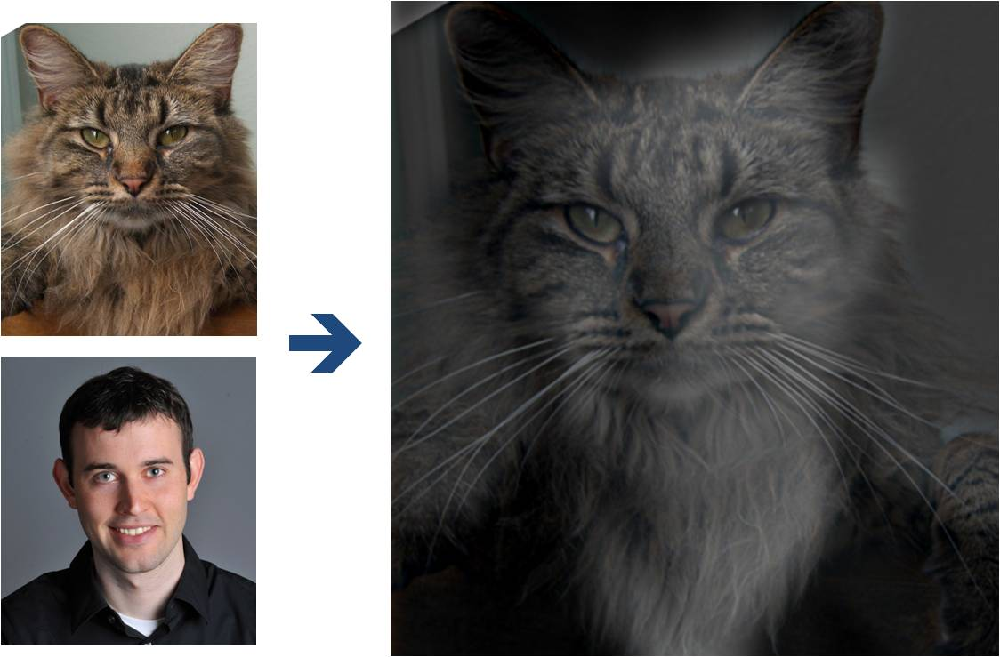
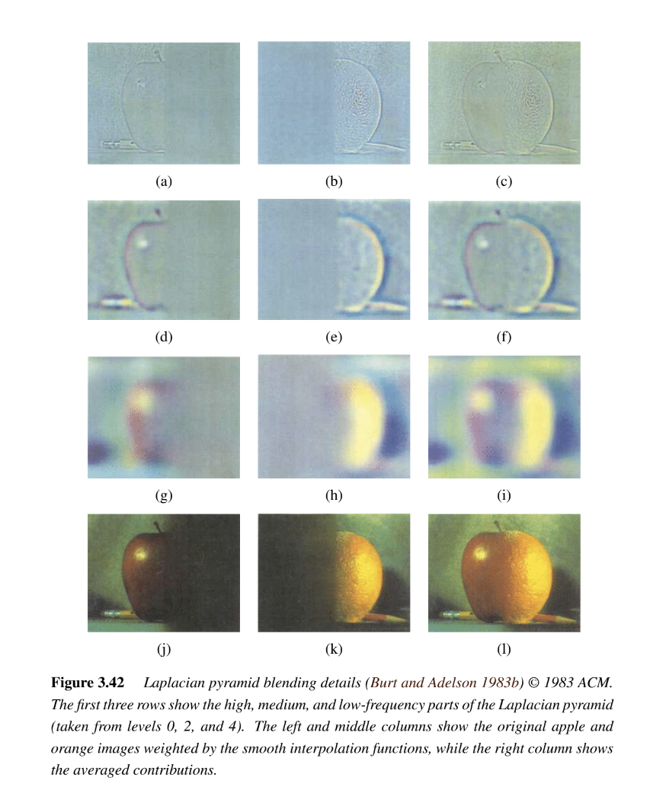

Due Date: 11:59pm on Monday, Sep 23, 2024 [START EARLY]
Fun with Filters and Frequencies!
Important Note: This project requires you to show many image results. However, the website submission size limit is 100 MB per student. We suggest using medium-size images (less than 0.8 MB per image) as your testing cases for all questions in this project.
Part 1: Fun with Filters
In this part, we will build intuitions about 2D convolutions and filtering.
Part 1.1: Finite Difference Operator
We will begin by using the humble finite difference as our filter in the x and y directions.

First, show the partial derivative in x and y of the cameraman image by convolving the image with finite difference operators D_x and D_y (you can use convolve2d from scipy.signal library). Now compute and show the gradient magnitude image. To turn this into an edge image, lets binarize the gradient magnitude image by picking the appropriate threshold (trying to suppress the noise while showing all the real edges; it will take you a few tries to find the right threshold; This threshold is meant to be assessed qualitatively).
Part 1.2: Derivative of Gaussian (DoG) Filter
We noted that the results with just the difference operator were rather noisy. Luckily, we have a smoothing operator handy: the Gaussian filter G. Create a blurred version of the original image by convolving with a gaussian and repeat the procedure in the previous part (one way to create a 2D gaussian filter is by using cv2.getGaussianKernel() to create a 1D gaussian and then taking an outer product with its transpose to get a 2D gaussian kernel).
-
What differences do you see?
Now we can do the same thing with a single convolution instead of two by creating a derivative of gaussian filters. Convolve the gaussian with D_x and D_y and display the resulting DoG filters as images.
-
Verify that you get the same result as before.
Part 2: Fun with Frequencies!
Part 2.1: Image "Sharpening"
Pick your favorite blurry image and get ready to "sharpen" it! We will derive the unsharp masking technique. Remember our favorite Gaussian filter from class. This is a low pass filter that retains only the low frequencies. We can subtract the blurred version from the original image to get the high frequencies of the image. An image often looks sharper if it has stronger high frequencies. So, lets add a little bit more high frequencies to the image! Combine this into a single convolution operation which is called the unsharp mask filter. Show your result on the following image (download here) plus other images of your choice --

Also for evaluation, pick a sharp image, blur it and then try to sharpen it again. Compare the original and the sharpened image and report your observations.
Part 2.2: Hybrid Images

(Look at image on right from very close, then from far away.)
Overview
The goal of this part of the assignment is to create hybrid images using the approach
described in the SIGGRAPH 2006 paper
by Oliva, Torralba, and Schyns. Hybrid images are static images that
change in interpretation as a function of the viewing distance. The basic idea is that high frequency tends
to dominate perception when it is available, but, at a distance, only the low
frequency (smooth) part of the signal can be seen. By blending the high frequency portion of one image with the low-frequency portion of another, you get a hybrid image that leads to different interpretations at different distances.
Details
Here, we have included two sample images (of Derek and his former cat Nutmeg) and some matlab
starter code that can be used to load two images and align them. Here is the python version. The alignment is important because it affects
the perceptual grouping (read the paper for details).
-
First, you'll need to get a few pairs of images that you want to make into
hybrid images. You can use the sample
images for debugging, but you should use your own images in your results. Then, you will need to write code to low-pass
filter one image, high-pass filter the second image, and add (or average) the
two images. For a low-pass filter, Oliva et al. suggest using a standard 2D Gaussian filter. For a high-pass filter, they suggest using
the impulse filter minus the Gaussian filter (which can be computed by subtracting the Gaussian-filtered image from the original).
The cutoff-frequency of
each filter should be chosen with some experimentation.
- For your favorite result, you should also illustrate the process through frequency analysis. Show the log magnitude of the Fourier transform of the two input images, the filtered images, and the
hybrid image. In MATLAB, you can compute and display the 2D Fourier transform with
with:
imagesc(log(abs(fftshift(fft2(gray_image)))))and in Python it's plt.imshow(np.log(np.abs(np.fft.fftshift(np.fft.fft2(gray_image)))))
- Try creating 2-3 hybrid images (change of expression,
morph between different objects, change over time, etc.). Show the input image and hybrid result per example. (No need to show the intermediate results as in step 2.)
Bells & Whistles
Try using color to enhance the effect.
Does it work better to use color for the high-frequency component, the
low-frequency component, or both? (0.07 cookie points)
Multi-resolution Blending and the Oraple journey
Overview
The goal of this part of the assignment is to blend two images seamlessly using a multi resolution blending as described in the 1983 paper by Burt and Adelson. An image spline is a smooth seam joining two image together by gently distorting them. Multiresolution blending computes a gentle seam between the two images seperately at each band of image frequencies, resulting in a much smoother seam.
We'll approach this section in two steps:
- creating and visualizing the Gaussian and Laplacian stacks and
- blending together images with the help of the completed stacks, and exploring creative outcomes
Part 2.3: Gaussian and Laplacian Stacks

Overview
In this part you will implement Gaussian and Laplacian stacks, which are kind of like pyramids but without the downsampling. This will prepare you for the next step for Multi-resolution blending.
Details
-
Implement a Gaussian and a Laplacian stack. The different between a stack and a pyramid is that in each level of the pyramid the image is downsampled, so that the result gets smaller and smaller.
In a stack the images are never downsampled so the results are all the same dimension as the original image, and can all be saved in one 3D matrix (if the original image was a grayscale image).
To create the successive levels of the Gaussian Stack, just apply the Gaussian filter at each level, but do not subsample.
In this way we will get a stack that behaves similarly to a pyramid that was downsampled to half its size at each level. If you would rather work with pyramids, you may implement pyramids other than stacks. However, in any case, you are NOT allowed to use matlab's impyramid() and its equivalents in this project. You must implement your stacks from scratch!
- Apply your Gaussian and Laplacian stacks to the Oraple and recreate the outcomes of Figure 3.42 in Szelski (Ed 2) page 167, as you can see in the image above. Review the 1983 paper for more information.
Part 2.4: Multiresolution Blending (a.k.a. the oraple!)

Overview
Review the 1983 paper by Burt and Adelson, if you haven't! This will provide you with the context to continue. In this part, we'll focus on actually blending two images together.
Details
Here, we have included the two sample images from the paper (of an apple and an orange).
- First, you'll need to get a few pairs of images that you want blend together with a vertical or horizontal seam. You can use the sample
images for debugging, but you should use your own images in your results. Then you will need to write some code in order to use your Gaussian and Laplacian stacks from part 2 in order to blend the images together. Since we are using stacks instead of pyramids like in the paper, the algorithm described on page 226 will not work as-is. If you try it out, you will find that you end up with a very clear seam between the apple and the orange since in the pyramid case the downsampling/blurring/upsampling hoopla ends up blurring the abrupt seam proposed in this algorithm. Instead, you should always use a mask as is proposed in the algorithm on page 230,
and remember to create a Gaussian stack for your mask image as well as for the two input images. The Gaussian blurring of the mask in the pyramid will smooth out the transition between the two images. For the vertical or horizontal seam, your mask will simply be a step function of the same size as the original images.
- Now that you've made yourself an oraple (a.k.a your vertical or horizontal seam is nicely working), pick two pairs of images to blend together with an irregular mask, as is demonstrated in figure 8 in the paper.
- Blend together some crazy ideas of your own!
- Illustrate the process by applying your Laplacian stack and displaying it for your favorite result and the masked input images that created it. This should look similar to Figure 10 in the paper.
Bells & Whistles
- Try using color to enhance the effect. (0.07 cookie points)
Deliverables
For this project you must turn in both your code and a project webpage as described here and tell us about the most important thing you learned from this project!
Scoring
The first part of the assignment is worth 30 points. The following things need to be answered in the html webpage along with the visualizations mentioned in the problem statement. The distribution is as follows:
- (15 points) Include a brief description of gradient magnitude computation.
- (15 points) Answer the questions asked in part 1.2
The second part of the assignment is worth 65 points, as follows:
- (20 points) for the implementation of all four parts of the project.
- The following are the points for the project html page description as well as results:
- (15 points) for the Unsharp Masking: Show the progression of the original image to the sharpened image for the given image and an image of your choice.
- (5 points) for hybrid images and the Fourier analysis;
- (5 points) for including at least two hybrid image examples beyond the first (including at least one failure);
- (15 points) for multiresolution blending;
- (5 points) for including at least two multiresolution blending examples beyond the apple+orange,
one of them with an irregular mask.
5 points for clarity. This includes the quality of the visualizations, the clarity of the explanations, and the overall organization of the webpage.
For this project, you can also earn up to 0.36 extra cookie points for the Bells & Whistles mentioned above or suggest your own extensions (check with prof first).
Cookie Points Policy:There will be opportunities to complete quiz-drop “cookie points” on projects. For every full cookie you obtain, 1 quiz can be dropped from your average. You can earn up to 2 cookies, and only integer-amount of cookies can be redeemed (no fractions). Please note that the total number of cookie points available in this project is 0.50 points.
Acknowledgements
The hybrid images part of this assignment is borrowed
from Derek Hoiem's
Computational Photography class.
 Programming Project #2 (proj2)
Programming Project #2 (proj2){kind=link}